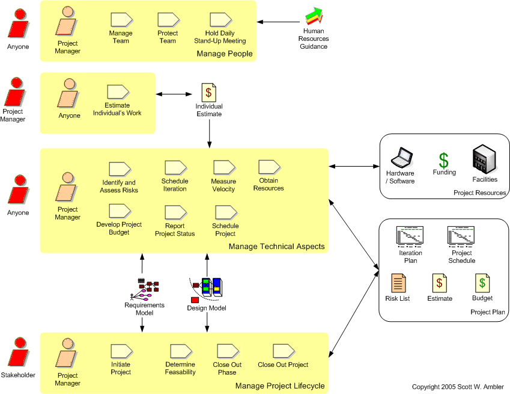

The Project Management Discipline
| Home | Phases | Disciplines | Milestones | Roles | Deliverables | Guidance | Help |
|
|
The Project Management Discipline |
|
||||||||
|
||||||||||
The goal of this discipline is to direct the activities that takes place on the project. This includes managing risks, directing people (assigning tasks, tracking progress, etc.), and coordinating with people and systems outside the scope of the project to be sure that it is delivered on time and within budget.

| Phase | Activities |
| Inception | Start building the team. At this point you will need
someone with modeling skills to work with
stakeholders to identify the initial requirements for your system and
with technical people to identify a potential architecture. Build relationships with your project stakeholders. Stakeholder support and participation is critical to your success. Determine project feasibility. Your project should be financially, technically, operationally, and politically feasible. In other words, it should make sense from a business point of view, you should be able to build it, you should be able to keep it up and running once you deliver it into production, and your organization should be able to tolerate the project. Develop a high-level schedule for the entire project. Your project schedule should show your project effort organized into iterations, indicate the major milestone reviews, tasks which address critical dependencies which your team has with other teams, and your projected end date. Develop a detailed iteration plan for the upcoming iteration. Detailed planning is performed on a just in time (JIT) basis. When there are major events, such as a review or a task which addresses a critical project dependency, in an upcoming iteration the project manager should work with the affected people ahead of time to plan the appropriate activities. With respect to detailed planning for an iteration, the best way is to simply gather the team at the beginning of an iteration and work with them to plan out their work: the person who is going to do the work is often the best person suited to plan it. Manage risk. There are always risks on a software development project: business, technical, and organizational. Throughout your project you want to identify these risks and develop strategies to address them, summarizing your efforts with a risk list. Obtain stakeholder support and funding. You will need to show that you understand the scope, that the project is feasible, that you understand and will address risks, and that you have a viable plan for proceeding. You should work with your stakeholders before the milestone review to gain their support, otherwise you are at risk of failing the review. Close out the phase. You will need to hold the Lifecycle Objectives (LCO) milestone review, the primary purpose of which is to formalize stakeholder support for the project. |
| Elaboration | Build the team. As your project ramps up you will
potentially need to add people to it. During this phase you need
people with architectural and implementation skills. You many need
to
train people in new development skills. Protect the team. Politics is an unfortunate reality in any organization, and a good project manager will shield their team members from it as much as possible. Obtain resources. Your team needs funding, facilities (e.g. rooms, cubicles), hardware, software, and so on to do their jobs. Manage risk. Continue your risk management efforts. Update your project plan. Continue your planning efforts as described above. Close out the phase. You will need to hold the Lifecycle Architecture (LCA) milestone review, the primary purpose of which is to show that your architecture works and that it addresses the major technical risks faced by your project team. |
| Construction | Manage the team. Continue to evolve the team
(developers and testers are most needed), continue to protect them and
to obtain the resources that they need. Manage risk. Continue your risk management efforts. Update your project plan. During the Construction phase you will need to ensure that you have identified the major dependencies involved with successful deployment of your system. You need to consider the needs of your support and operations groups, end user training, and pilot/beta test planning. Close out the phase. You will need to hold the Initial Operating Capability (IOC) milestone review, the primary purpose of which is to show that your team has developed a system which is potentially ready to be deployed into production. |
| Transition | Manage the team. Your team will mostly include
developers, testers, and deployers. Close out the phase. You will need to hold the Product Release (PR) milestone review, the primary purpose of which is to show that your system has passed testing and is acceptable to its stakeholders. Initiate the next project cycle. Systems are developed and deployed into production in an incremental manner. During the Transition phase of release N, you will want to start the project initiation effort for release N+1. |
 |
Page last updated: May 13, 2006 This page is tailored with permission from Ambysoft Inc.'s Agile UP Product Original page is Copyright © 2005-2006 Ambysoft Inc. |